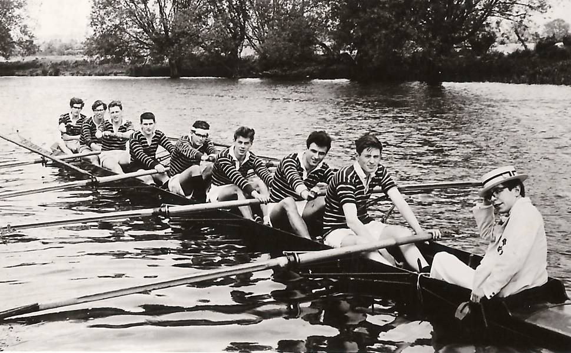
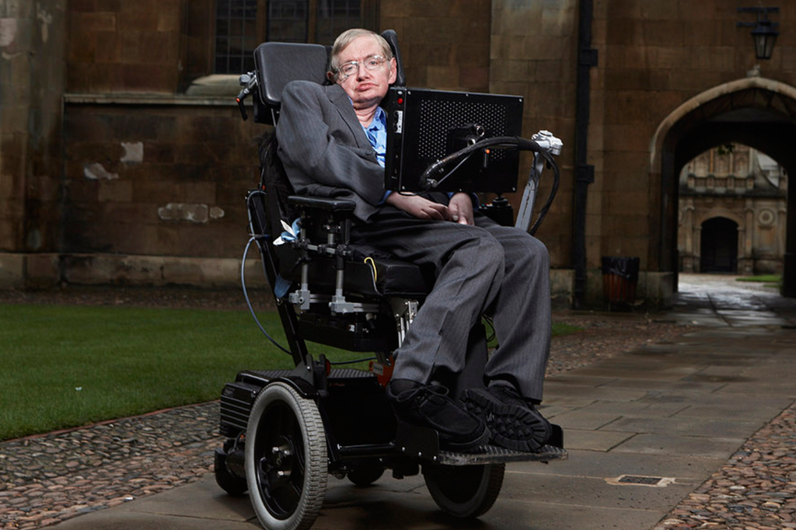
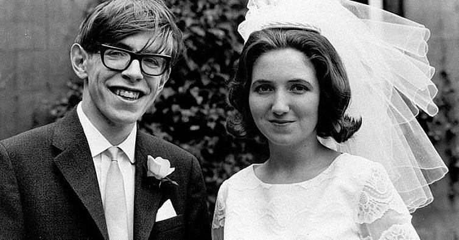
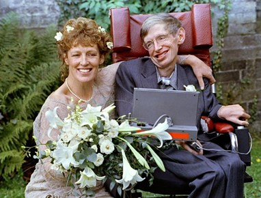

História de Stephen Hawking
O começo de tudo

Nascido em 8 de janeiro de 1942 em Oxford, Inglaterra, em meio a segunda guerra mundial Stephen Hawking,
Filho de Frank e Isobel Hawking, era o mais velho dos quatro filhos do casal.
Por causa da segunda guerra mundial a situação financeira da família Hawking não era das melhores, mas apesar de
tudo, os pais de Stephen possuíam diplomas, algo considerado raro na época. Ambos estudaram na universidade de Oxford.
Frank era médico e Isobel estudou Filosofia, Política e Economia.
Eles valorizavam muito a educação então era de se esperar que Stephen seria um aluno exemplar, porém não era bem assim,
muito pelo contrário.
Durante sua infância Stephen teve dificuldades na escola, inclusive ele culpava os métodos de ensino dos professores
por não conseguirem faze-lo ler. Com oito anos ele ainda não sabia ler.
Depois de um tempo se mudaram para a cidade de Sanit Albans onde Stephen começou a estudar em colégio para meninas,
mas que algumas classes aceitavam alguns garotos mais novas, foi ali onde ele aprendeu a ler. Mas como teve dificuldades
em se socializar, ele foi matriculado em outra escola que ficou por um curto período, até que ao completar 11 anos se
mudou para a Escola de St Albans.
Stephen não se interessava muito por livros, diferente de seus pais que na maioria das vezes jantavam quietos, lendo algo.
Ele gostava mesmo era de criar e montar coisas, e gastava a maioria do seu tempo com isso. Tanto que aos 16 anos montou um computador
com peças de telefones e relógios, junto com colegas e uma figura importante na vida de Hawking, seu professor de matremática Dick Tahta (cujo nome de batismo era Dikran)
que futuramente Hawking a fazer uma faculdade de matemática.
Vida Acadêmica
Frank, pai de Stephen, queria que ele fizesse medicina, pois Frank dizia que era a área que mais tinham oportunidades
profissionais e também queria que ele estudasse em Oxford, onde Frank e Isobel se formaram.
Porém Stephen não queria fazer faculdade de medicina, pois achava que essa não era sua área, depois de um tempo os dois fizeram
um acordo, Stephen iria para a faculdade de Oxford, mas não iria cursar medicina e sim, química e física.
Então em 1959 com 17 anos, o Garoto fez uma prova e ganhou uma bolsa para universidade de Oxford.
Em seu primeiro ano stephen não tinha muito amigos e até increveu-se no time de remo da faculdade, só para se enturmar, coisa que inclusive
deu bastante certo, tanto que no segundo ano ele conseguiu se enturmar e fez varios amigos que futuramente também se tornairam físicos de sucesso.
Durante seu tempo lá, ele demonstrou um talento notável para a compreensão de conceitos complexos e um entusiasmo genuíno pela física teórica.
Após concluir seus estudos de graduação, ele continuou seus estudos em Cosmologia Teórica na Universidade de Cambridge, onde obteve seu doutorado em 1966.

A Doença

Stephen Hawking foi diagnosticado com esclerose lateral amiotrófica (ELA), também conhecida como doença de Lou Gehrig,
em 1963, quando tinha apenas 21 anos. A ELA é uma doença neurodegenerativa progressiva que afeta os neurônios motores responsáveis
pelo controle dos movimentos voluntários dos músculos.
A ELA é uma condição que causa a deterioração dos neurônios motores, resultando em fraqueza muscular,
paralisia e perda progressiva da função motora. Na maioria dos casos, a função cognitiva não é afetada, o que significa que a pessoa
mantém sua capacidade intelectual, mas perde gradualmente a capacidade de se mover, falar, engolir e respirar.
No caso de Hawking, a progressão da ELA foi especialmente rápida. Pouco tempo após o diagnóstico, ele já enfrentava dificuldades de locomoção e de fala.
Com o tempo, sua condição piorou, e ele passou a depender de uma cadeira de rodas motorizada para se locomover e de um sintetizador de voz para se comunicar.
Apesar das limitações impostas pela ELA, Hawking nunca permitiu que sua condição o impedisse de continuar seu trabalho científico e de buscar seus objetivos acadêmicos.
Ele desenvolveu um sistema de comunicação baseado em um sintetizador de voz controlado pelo movimento de seus músculos faciais,
permitindo que ele se comunicasse e compartilhasse suas ideias com o mundo.
Ele desenvolveu um sistema de comunicação baseado em um sintetizador de voz controlado pelo movimento de seus músculos faciais,
permitindo que ele se comunicasse e compartilhasse suas ideias com o mundo.
A determinação de Hawking em lidar com os desafios da ELA e em superar as limitações físicas foi uma inspiração para muitas pessoas ao redor do mundo.
Ele se tornou um símbolo de coragem e perseverança, mostrando que a mente humana pode transcender as limitações do corpo.
É importante destacar que a ELA é uma doença incurável, e as pessoas que a têm enfrentam dificuldades significativas em suas vidas diárias.
A conscientização sobre a ELA e o apoio à pesquisa são essenciais para melhorar a compreensão da doença e buscar tratamentos mais eficazes no futuro.
Stephen Hawking faleceu em 14 de março de 2018, aos 76 anos. A causa direta de sua morte foi a esclerose lateral amiotrófica (ELA),
uma doença neurodegenerativa que ele enfrentou por décadas. A ELA é uma condição progressiva que afeta os neurônios motores responsáveis
pelo controle dos movimentos voluntários dos músculos. No caso de Hawking, a doença causou a perda gradual da função motora, resultando em
paralisia progressiva e comprometimento da capacidade respiratória.
A progressão da ELA varia de pessoa para pessoa. Embora Hawking tenha vivido muito mais tempo do que a maioria das
pessoas com ELA, a doença eventualmente afetou sua saúde de maneira significativa. Ele dependia de suporte respiratório e cuidados médicos constantes
para manter sua qualidade de vida.
Vida Pessoal
Hawking casou-se duas vezes ao longo de sua vida. Seu primeiro casamento foi com Jane Wilde em 1965, com quem teve três filhos: Robert, Lucy e Timothy.
Stephen e Jane se divorciaram em 1995. Em seguida, em 1996, Stephen casou-se com Elaine Mason, que já era sua enfermeira.
O segundo casamento também terminou em divórcio em 2006.
Casamento com Jane Wilde: Stephen Hawking casou-se com Jane Wilde em 14 de julho de 1965. Jane era sua colega de faculdade e eles se conheceram enquanto estudavam na Universidade de Cambridge. Juntos, eles tiveram três filhos:
Robert Hawking: Robert nasceu em 1967. Ele é um engenheiro e trabalhou no setor de software.
Lucy Hawking: Lucy nasceu em 1970. Ela é uma escritora e educadora, conhecida por seus livros infantis que exploram conceitos científicos.
Timothy Hawking: Timothy nasceu em 1979. Ele seguiu a carreira de software e também trabalhou no setor de jogos de computador.
Casamento com Elaine Mason: Após o divórcio de Stephen e Jane em 1995, ele casou-se com Elaine Mason em 16 de setembro de 1996.
Elaine era uma enfermeira que cuidava de Stephen. O segundo casamento de Hawking também terminou em divórcio em 2006.


Curiosidades
Gravidade zero: Em 2007, Stephen Hawking experimentou a gravidade zero ao voar a bordo de um avião especial.
Durante o voo, ele teve a oportunidade de flutuar e experimentar a sensação de ausência de gravidade.
 Stephen Hawking nasceu exatamente 300 anos depois de Galileu Galilei conhecido como "pai da astronomia observacional", "pai da física moderna", "pai do método científico" e "pai da ciência moderna"
Aparições em programas de TV e filmes: Hawking fez várias aparições em programas de televisão e filmes. Ele apareceu em episódios de séries populares, como "Star Trek: The Next Generation" e "The Big Bang Theory". Também houve um filme biográfico sobre sua vida chamado "A Teoria de Tudo", lançado em 2014.
Stephen Hawking nasceu exatamente 300 anos depois de Galileu Galilei conhecido como "pai da astronomia observacional", "pai da física moderna", "pai do método científico" e "pai da ciência moderna"
Aparições em programas de TV e filmes: Hawking fez várias aparições em programas de televisão e filmes. Ele apareceu em episódios de séries populares, como "Star Trek: The Next Generation" e "The Big Bang Theory". Também houve um filme biográfico sobre sua vida chamado "A Teoria de Tudo", lançado em 2014.
 Cadeira de rodas motorizada: A perda gradual da mobilidade devido à ELA levou Hawking a depender de uma cadeira de rodas motorizada para se locomover. Sua cadeira de rodas era controlada por meio de um joystick acionado pelos dedos e polegar.
Cadeira de rodas motorizada: A perda gradual da mobilidade devido à ELA levou Hawking a depender de uma cadeira de rodas motorizada para se locomover. Sua cadeira de rodas era controlada por meio de um joystick acionado pelos dedos e polegar.
Expectativa de vida superada: Embora a ELA seja uma doença progressiva e com uma expectativa de vida geralmente curta, Stephen Hawking viveu muito mais do que o esperado. Ele sobreviveu por mais de cinco décadas após o diagnóstico inicial.